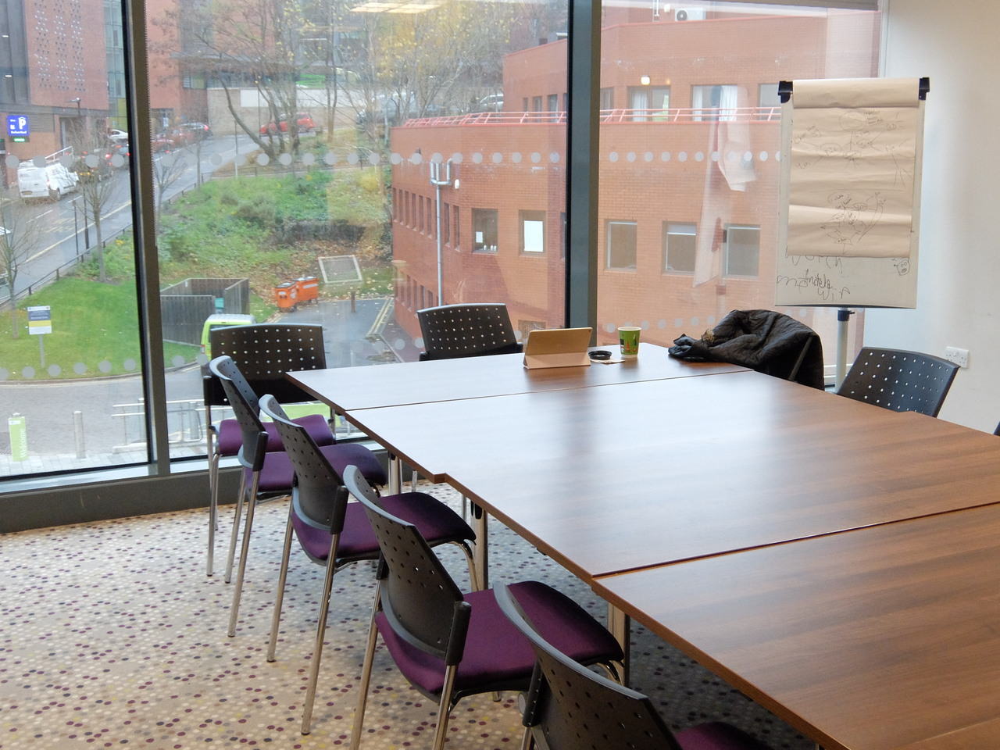

Meet up
Is it all just shops, bars and restaurants?
There are a few spaces around the Students' Union that at first glance you may miss!
Space for societies
The Students' Union provide many bookable spaces for societies all around the building. Students are not allowed to book these for personal use so there will always be a room that can be booked for a society. Perfect for a quick group meeting or a long planning meeting, these rooms are where you want to go if you ever find yourself in charge of a society.
LGBT Lounge
The LGBT Lounge provides a designated safe-space within the Union building for LGBT students to hang out. Whether you feel alone or just want some new friends, this place is perfect to go and find others who may be in a similar situation to you and can lend you an ear to talk to.
Music Practice Suite
Upstairs in the gallery there is a not-so-well advertised Music Practice Suite. Whether you're a music pro or just getting into it and need somewhere to practise in peace these state-of-the-art music rooms will be here for you!